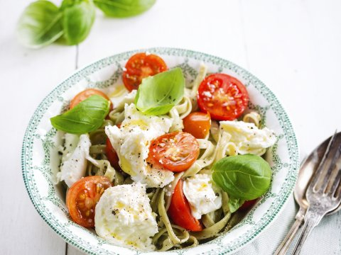

Pasta met kerstomaatjes

Ingredienten
- 400g spaghetti
- 1 teentje knoflook
- 500 g kerstomaten
- takjes basilicum
- 0.5 rood pepertje
bereiding
- Was en halveer de kerstomaten. Snijd het pepertje in ragfijne reepjes. Pel en snipper de knoflook. Scheur de basilicumblaadjes grof. Kook de pasta volgens de aanwijzingen op de verpakking beetgaar.
- Verhit de vloeibare margarine en roerbak hierin de halve kerstomaatjes met de reepjes peper gedurende 2 à 3 minuten. Bak dan de knoflook een minuutje mee
- Giet de spaghetti af en voeg hem nog een beetje nat bij de tomaatjes, strooi de basilicumreepjes erover en meng opnieuw.